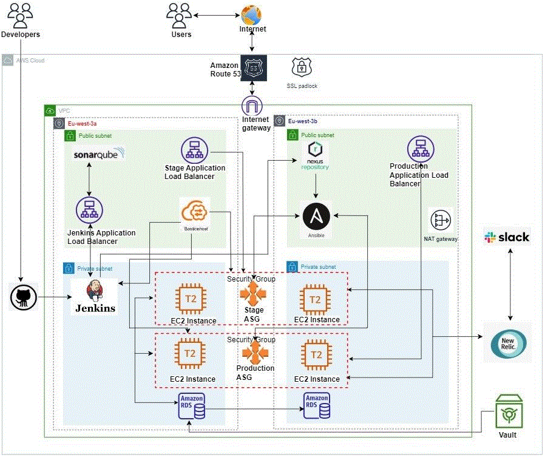

DevOps & Cloud Infrastructure Engineer | Blogger | Tech Enthusiast
Hello! I'm Fazal Ullah Khan, a passionate DevOps & Infrastructure Engineer with experience in various technologies. I love to write about tech and share my knowledge through blogs.
The Jenkins infrastructure pipeline project involves setting up a Jenkins server using Terraform, provisioning AWS resources, and integrating continuous integration processes. The pipeline triggers upon code changes in GitHub, facilitating automated provisioning, validation, and deployment of infrastructure. Key components include setting up VPC, subnets, security groups, IAM roles, and Jenkins server, along with managing AWS and GitHub credentials within Jenkins for secure automation.
This project involves setting up a Jenkins Master-Slave architecture with one master and two slave nodes. It covers installing Jenkins on the master, provisioning two EC2 instances as slaves, and configuring these nodes in Jenkins. The process includes installing Java on all nodes, connecting slaves to the master, and demonstrating job delegation from the master to the slaves.
Develop a containerized Java application using a Jenkins pipeline, leveraging a robust and scalable infrastructure. Key objectives included application containerization and ensuring high availability. The approach involved using Jenkins for seamless deployment, integrating tools like AWS, Docker, Terraform, SonarQube, Nexus, and NewRelic for infrastructure provisioning, configuration management, and performance monitoring. The outcome is to achieve a resilient, self-healing environment for the Java application.
The Sock-Shop Project Using KOPs involves deploying and managing a resilient infrastructure with Kubernetes Operations (KOPs) to ensure high availability and scalability. Key steps include setting up Terraform for S3 buckets and Jenkins, configuring Jenkins for CI/CD, and provisioning a Kubernetes cluster with KOPs. The project also incorporates ArgoCD for application management, monitoring with Grafana, and ultimately, cleaning up the infrastructure by destroying the Kubernetes cluster and associated resources. The tech stack includes AWS, GitHub, Terraform, Jenkins, Kubernetes, and KOPs.
Automate continuous integration and delivery using Jenkins, replacing manual steps with automated actions between staging and production. Utilize Terraform, Ansible, Vault, Sonarqube, Jenkins, New Relic, Slack, GitHub, Nexus, Docker Hub, and AWS to manage infrastructure, deploy Docker containers, and monitor application performance. Key processes included using Jenkins pipelines for CI/CD, auto-scaling groups for instance management, and Ansible playbooks for dynamic updates and deployments. The project ensured seamless integration, delivery, and monitoring of applications in a cloud environment.
The main goal of this project is ...
The main goal of this project is ...
The main goal of this project is ...
Email: fazalullah@example.com